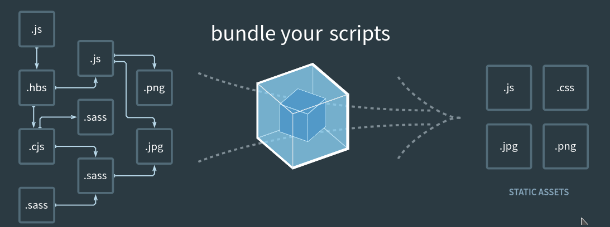
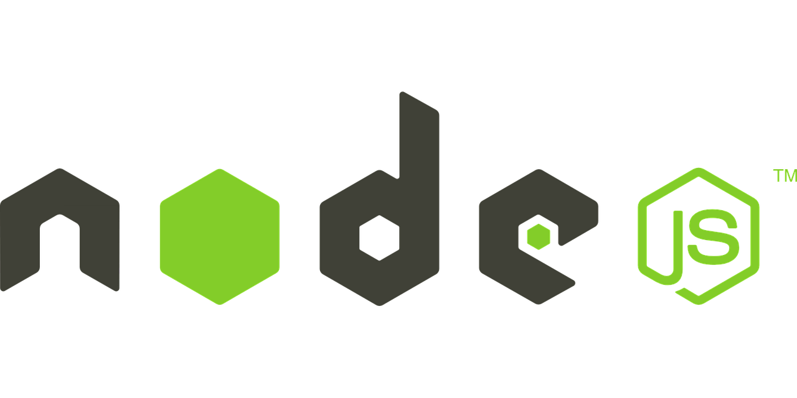

## Vue.js / Nuxt.js <span class="r-stack" style="display: inline-block;"> <img src="img/vue.png" class="fragment" alt="vue.js logo" width="250"/> </span> <span class="r-stack" style="display: inline-block;"> </span> --- ### (SPA) اپلیکیشن های تک صفحهای <p class="fragment fade-left" style="font-size: 30px; direction: rtl;"> سایت های SPA یا سایت های تک صفحه ای به سایت هایی گفته میشود که یکبار فراخوانی میشود و عملیات جدید در صفحه بدون نیاز به ریفرش مرورگر یا فراخوانی دوباره ی صفحات انجام میگیرد. </p> <p class="fragment fade-right" style="font-size: 30px; direction: rtl;"> مثال خوب برای درک بهتر سایت های SPA پیام رسان های تحت وب مثل نسخه ی وب تلگرام یا فیسبوک و ... است که بدون ریفرش شدن یا فراخوانی مجدد صفحه اطلاعات تغییر پیدا میکند. </p> --- ### ماژول سیستم <p class="fragment fade-up" style="font-size: 30px; direction: rtl;"> Module یا ماژول در لغت به معنی یک قطعه یا بخش است. زمانی که برنامه جاوا اسکریپتی ما بزرگتر و بزرگتر می شود، مجبور می شویم این برنامه را به فایل های مختلفی تقسیم کنیم و نمی توانیم تمام برنامه را در یک فایل بنویسیم. به هر کدام از این فایل ها یک ماژول می گوییم چرا که قطعه ای از کد ما را درون خودشان دارند (البته به شرطی که کدهایشان را export کنند). هر ماژول می تواند یک کلاس یا مجموعه ای از توابع یا برخی اطلاعات پایگاه داده یا ثابت ها و یا هر بخشی از کد را داشته باشد. </p> --- ### مثالی از ماژول سیستم ```js [1-4|6-9] // => sayHi.js export function sayHi(user) { alert(`Hello, ${user}!`); } // => main.js import {sayHi} from './sayHi.js'; sayHi('John'); // => Hello, John ``` --- ### (Module bundler) ماژول باندلر <p class="fragment fade-down">  </p> --- ### درک بهتر از ماژول باندلر <div class="r-stack"> </div> --- ### (Node.js) نود جیاس  <p class="fragment" style="direction: rtl;"> Node.js یک پلتفرم سمت سرور مبتنی بر موتور جاوا اسکریپت گوگل کروم (V8 Engine) میباشد. Node.JS تمام چیزهایی که برای اجرای یک برنامه نوشته شده به زبان جاوا اسکریپت را نیاز دارید برایتان فراهم میکند. در واقع به کمک Node.js زبان برنامه نویسی جاوا اسکریپت به جای اجرا درمرورگر در محیط سرور اجرا میشود </p> --- #### NPM (Node Package Manager) <p class="fragment" style="direction: rtl;"> NPM یا همان node package manager، بزرگترین بستر برای ثبت، نشر، اشتراکگذاری، بروزرسانی و استفاده از پکیجهای جاوااسکریپت است. </p>
### (Vue.js) ویو جیاس <img src="img/vue.png" alt="vue.js logo" width="250"/> <p class="fragment" style="direction: rtl;"> Vue.js یک فریم ورک اوپن سورس جاوا اسکریپت میباشد که برای ساخت اپلیکیشن های تک صفحه ای یا اصطلاحا SPA (single-page application) و همچنین طراحی محیط رابط کاربری مورد استفاده قرار میگرید. </p> --- ### روش های استفاده از ویو CDN ```html <script src="https://unpkg.com/vue@next"></script> <!-- CDN --> ``` NPM ```bash npm init vite@latest <project-name> --template vue ``` --- ### آشنایی با ساختار ویو ```js[|1-6|7-11|12-16|17-21] data(){ return{ message: 'this is a test message', test: 'a test variable' } }, methods:{ changeMessage(){ this.message = 'another message from a method' } }, computed:{ messageTest(){ return this.message + this.test } }, watch:{ message(newValue,oldValue){ console.log(`new value is: ${newValue}, old value is: ${oldValue}`) } } ``` --- ### SFC ساختار ```html <template> <!-- some html code ... --> </template> ``` ```css <style> /* style for the template ... */ </style> ``` ```html <script> export default { data(){ /*... */ }, methods:{ /*... */ }, computed:{ /*... */ }, watch:{ /*... */ } } </script> ``` --- ### با ویو SPA ساخت <p class="fragment" style="direction: rtl;"> برای ساخت SPA باید از روش نصب NPM استفاده کنیم </p> --- ### SPA مسیریاب برای <p class="fragment" style="direction: rtl;"> ویو به صورت رسمی پکیجی برای مسیریابی ارائه کرده است که به راحتی میتوان از آن در پروژه ها استفاده کرد </p> --- ### Nuxt.js <p class="fragment">ناکست چیست؟</p> <p class="fragment" style="direction: rtl;"> در واقع ناکست همان ویو است اما با یک سری امکانات بیشتر و مشکلاتی که ویو داشته را حل کرده است </p> <p class="fragment" style="direction: rtl;"> مشکلاتی که ویو داشت چه بود؟ </p> <ul class="fragment" style="direction: rtl;"> <li>سرعت پایین لود اولیه</li> <li> مشکلات سئو (SEO)</li> </ul> --- ### !بریم چند خط کد بزنیم <p class="fragment fade-up"> <img src="img/code-time.jpg" alt="code time" width="500"> </p>